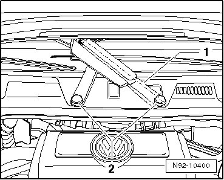
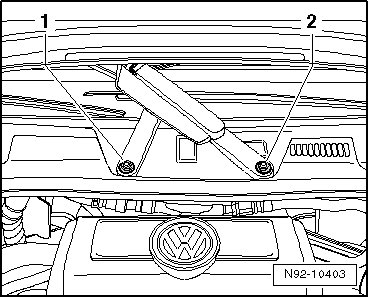
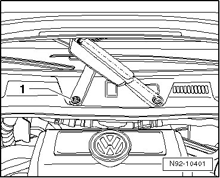
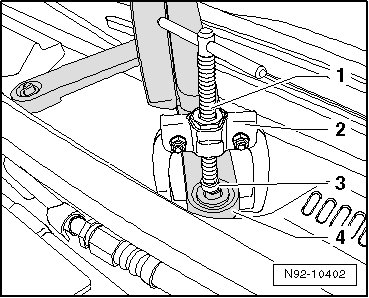

Passenger Side Wiper Arm, Removing
Windshield Wiper System
Passenger Side Wiper Arm, Removing
• Only the wiper arm shaft depicted at right in illustration is driven.
- Bring the passenger wiper arm - 1 - by hand into the position illustrated so it is stretched out.

- Pry the caps - 2 - out.
- Remove both nuts - 1 - and - 2 - from the wiper arm shafts.

- Remove the washer - 1 - from the wiper arm shaft.

CAUTION!
The puller positioned on the wiper arm can spring away while pulling the end of the wiper arm.
Protect the surrounding areas of the vehicle from damage.
• When positioning the puller, make sure it lies directly on the metal part of the wiper arm and not under the plastic cap under the wiper arm.
- Mount the Puller (T10369/5) - 2 - onto the end of the wiper arm - 4 - as shown in the illustration.

- Install the thrust piece - 3 - all the way and remove the wiper arm by turning the pressure bolt - 1 - clockwise.
- Repeat this procedure on the second wiper arm shaft and remove the passenger wiper arm.